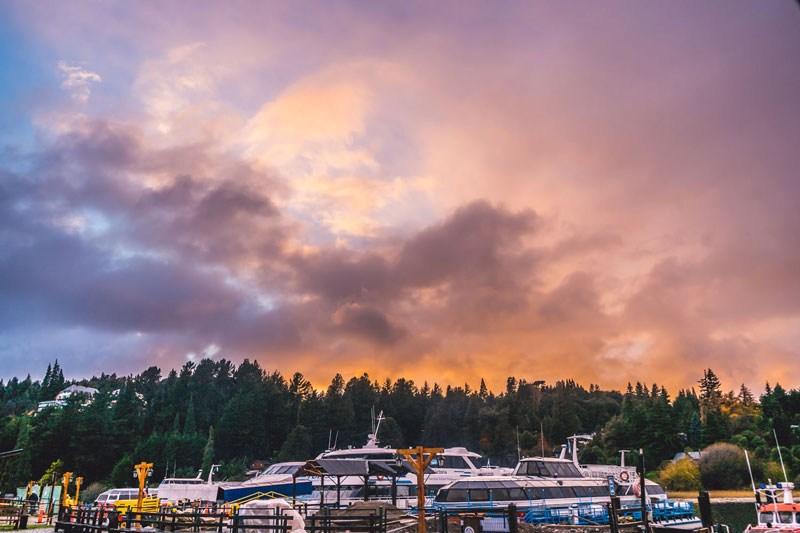
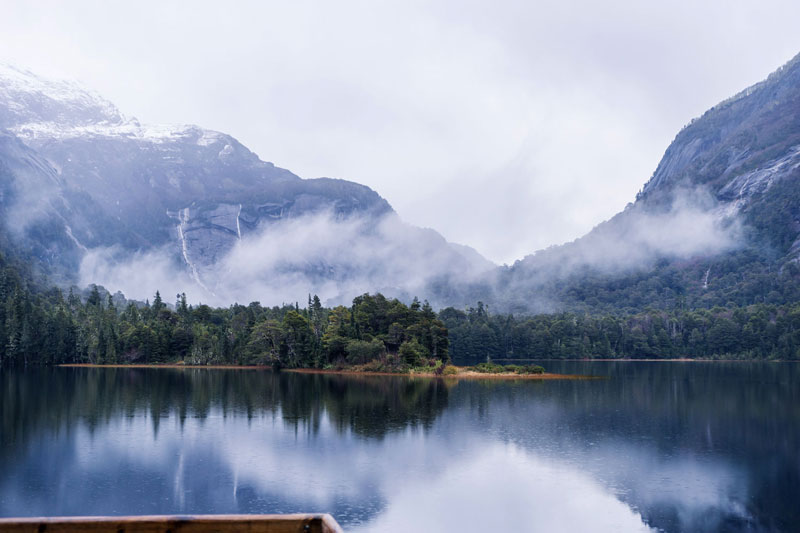
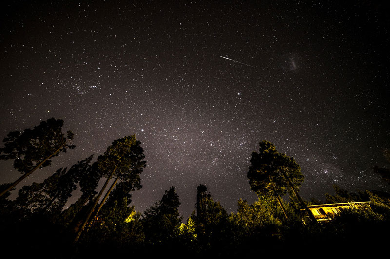

Bariloche 2019
San Carlos de Bariloche (comúnmente llamada Bariloche) es una ciudad en la región de la Patagonia argentina. Limita con Nahuel Huapi, un gran lago glacial rodeado de montañas de los Andes. Bariloche es conocida por su arquitectura al estilo alpino de Suiza y su chocolate, que se vende en tiendas de la calle Mitre, la avenida principal. También es una base popular para el excursionismo y el esquí en las montañas cercanas, y para explorar los alrededores del Distrito de los Lagos



Recomendaciones